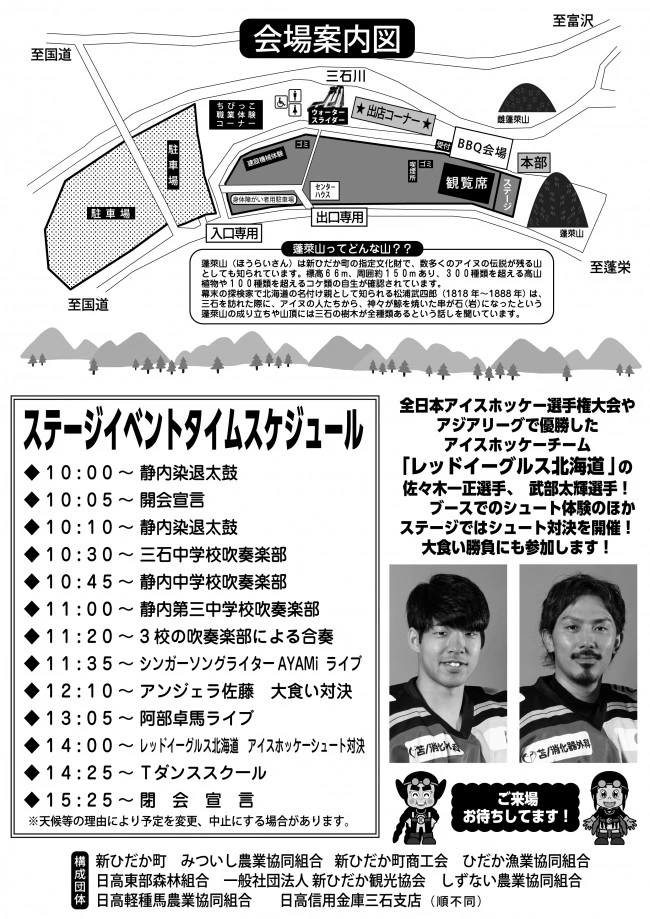

2026年の開催概要
7月5日（日）10:00〜15:30、三石蓬莱山公園。町の公式ページは7月9日更新で、開催への寄付のお礼も掲載されています。
地元の食を楽しむバーベキュー
会場で購入した地場産食材を焼いて楽しむコーナーが案内されました。受付が必要で、会場購入品以外の持ち込みは遠慮するよう呼びかけられていました。
音楽と体験の一日
中学校吹奏楽部の演奏、ライブ、大食い対決、アイスホッケーのシュート体験などが案内されました。子ども向けにはウォータースライダーや職業体験コーナーも。詳細は当時のチラシをご覧ください。
蓬莱山を知る
会場の蓬莱山は町の指定文化財。アイヌの伝説が残り、植物の豊かさでも知られる地域のシンボルです。
写真・資料で知る
町公式サイト掲載の2026年チラシです。画像を押すと拡大できます。PDF資料は画像化し、文字や日付が切れないよう全体を掲載しています。

公式情報・資料の出典
Web確認日：2026年10月19日。2026年の開催記録として掲載しています。掲載画像はサイト運営者の利用許可に基づき使用しています。